본당 소개
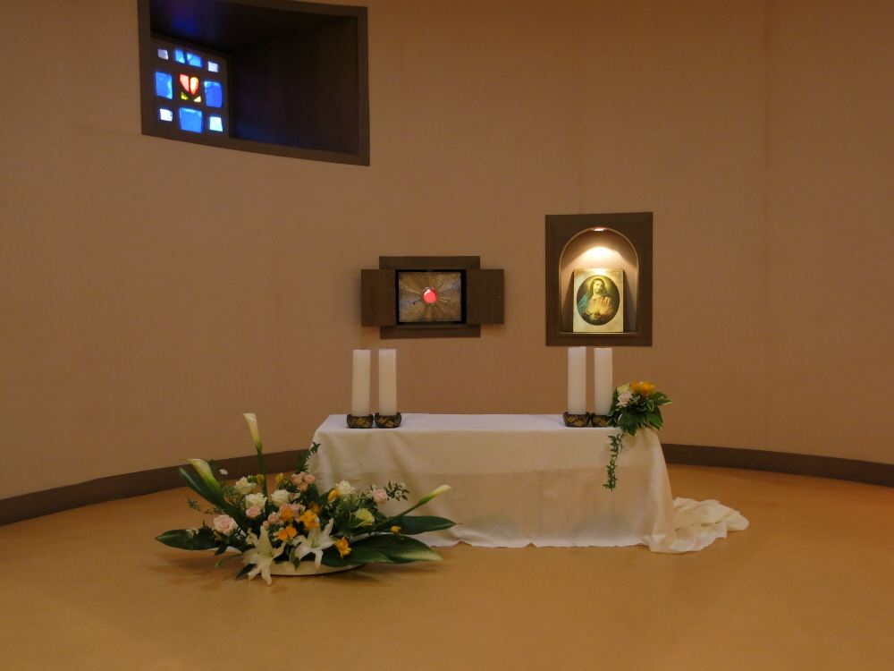
용머리성당은 1989년 효자동본당에서 분리 설립되어,
효자3동성당이라는 이름으로 시작해 이후 용머리성당으로 개칭하였습니다.
현재의 성전은 1997년 12월 6일에 봉헌되었습니다.
"모이면 기도, 흩어지면 선교"라는 표어 아래,
미사와 성사, 예비신자 교리, 각 단체 활동을 통해
신자들이 신앙 안에서 서로 연결될 수 있도록 돕고 있습니다.
처음 오시는 분도 편안하게 머무실 수 있습니다.
역대 주임신부
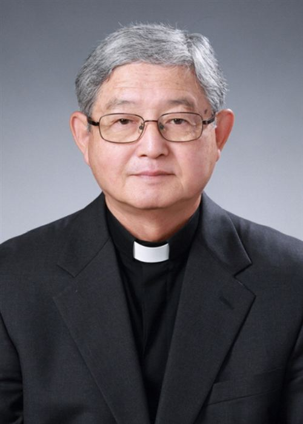
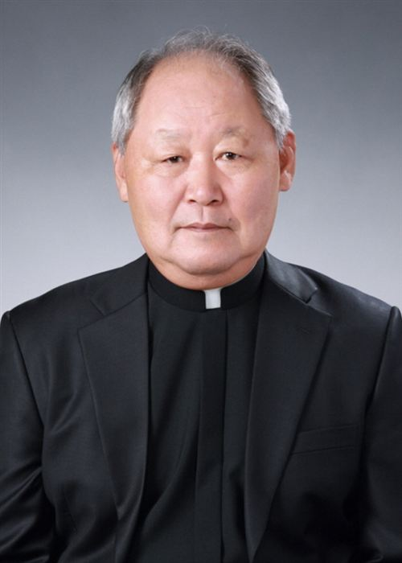
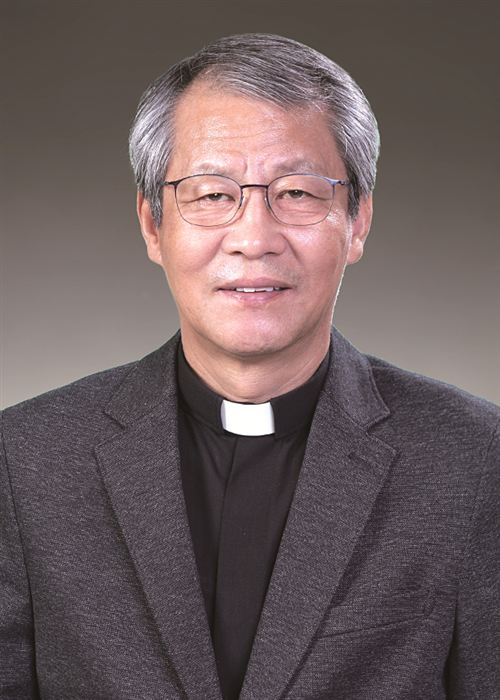
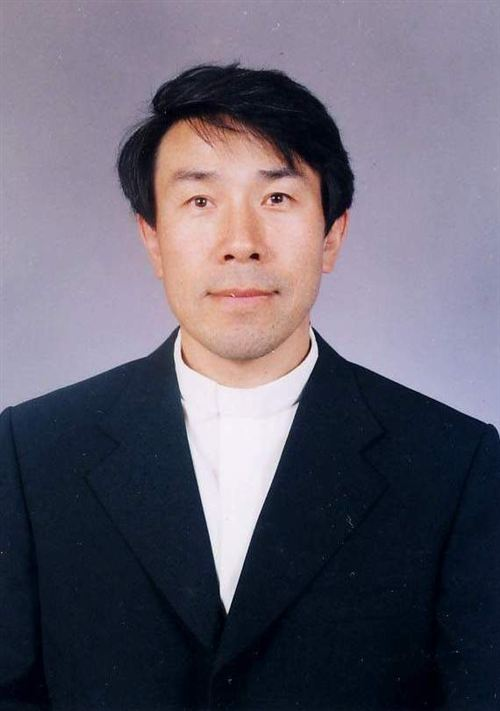
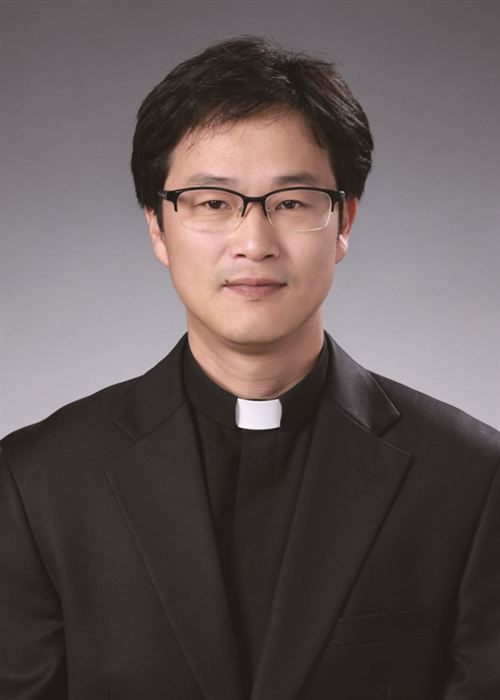
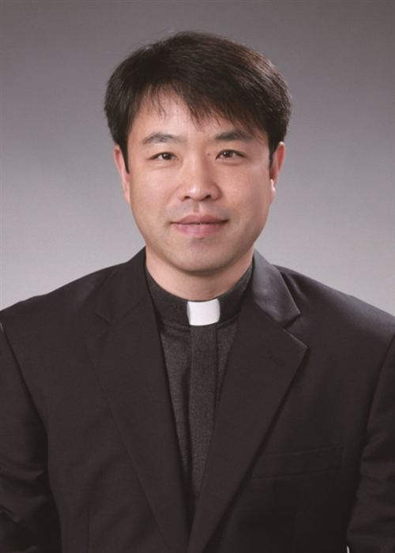
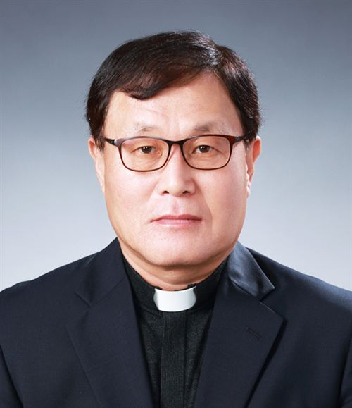
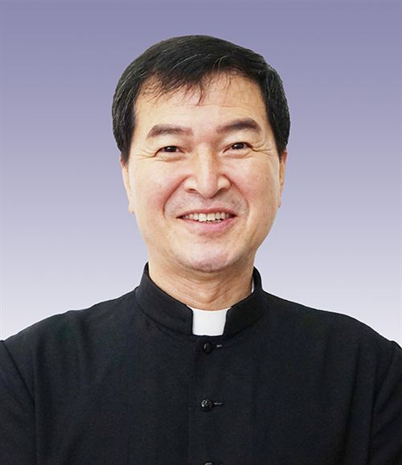
본당 출신 신부님
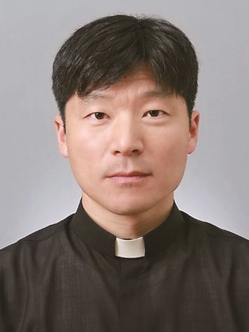
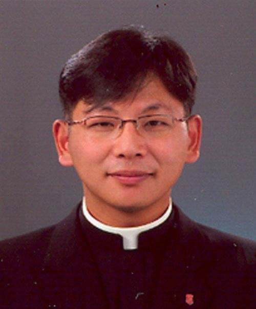
미사시간 안내
| 시간 | 미사 | |
|---|---|---|
| 토 18:00 | 저녁 주일미사 | 학생미사 |
| 06:00 | 아침미사 | |
| 10:30 | 교중미사 |
| 요일 | 시간 | |
|---|---|---|
| 월요일 | 06:00 | |
| 화요일 | 19:30 | |
| 수요일 | 10:00 | |
| 목요일 | 19:30 | |
| 금요일 | 10:00 |
공지사항 · 주보
본당 일정
| 일 | 월 | 화 | 수 | 목 | 금 | 토 |
|---|
갤러리
오시는 길
전북특별자치도 전주시 완산구 안행9길 5-8 (55105) · 용머리성당길찾기